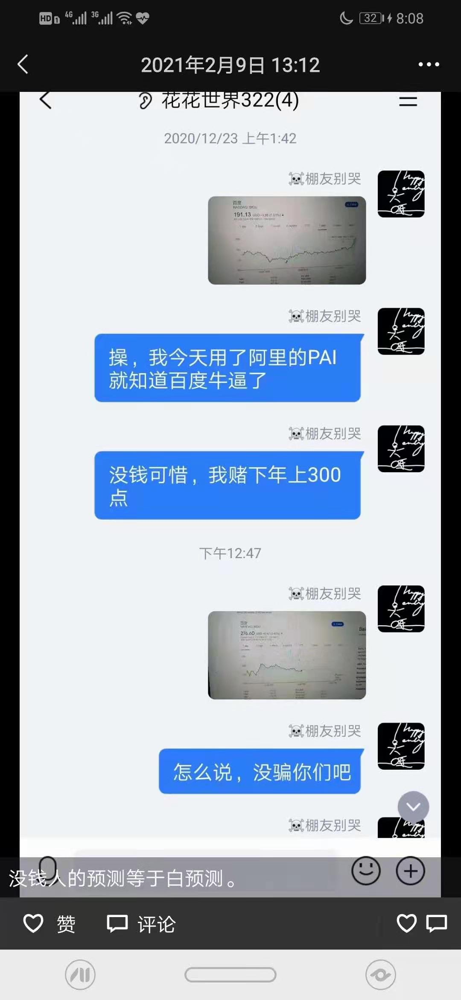

求职AI PM，百度用了我战略idea？¶
AI产品经理是直接应用或间接涉及了AI技术，进而完成相关AI产品的设计、研发、推广、产品生命周期管理等工作的产品经理。由于AI的技术领域太多、且有更多和垂直行业结合的机会，导致细分AI领域的产品经理所需要的背景和能力可能大不相同。1
Fig. 3 简历¶
点击下载整页简历PDF（带URL）¶
Linkedin（Writing can’t make money, but can make friends）：https://www.linkedin.com/in/%E8%88%92%E8%B5%B7-%E8%94%A1-b609001b7/
常见问题：https://stevenjokess.github.io/2bPM/chapter_interview/question.html
模拟面试：https://stevenjokess.github.io/2bPM/chapter_interview/simulate_interview.html
Be a Watcher：https://github.com/StevenJokess/2bPM/watchers
一个大计划经济问题：AI技术能否能加速实现整体性统计，并调节所有的行业的产能与需求？2 计划者拥有更多信息，如何保证消费者获得了好处？3
简历¶
项目经历详情¶
通过互联网学习AI+产品经理¶
Product Manager 自雇 入职日期2020年10月 – 2021年3月 任职时长4 个月
所在地点 中国 浙江省
通过互联网学习AI+产品经理，简历见https://stevenjokess.github.io/2bPM/get_started.html
背景：传统的招聘方由于求职方是否了解AI产品经理的职位要求以及公司情况而要求简历、设立面试环节（原有解决方案），而由于简历篇幅有限只能展示部分、时间有限往往只能出几个问题，不能确保全面考察到了面试者的能力，而这时求职方往往只有为数不多的时间去应答，极度考验临场反应来对答案进行表述，相比之前的积攒的能力这种情况有很强的随机性。
动机：为了公司（UCD）能尽快全面了解到我个人的能力(已经熟悉AI产品规划流程与设计工具(如Axure))，以最快捷最有效地招募到人才（哈哈哈，王婆卖瓜），而写出这本书（此时书即预备产品，我即产品经理）。
目标用户主要是招聘方，等待您需求的验证！同时可以给一些想一同成为AI金融产品经理的同学（不过你是我的竞品哎）提供参考。，以最快捷最有效地招募到人才（哈哈哈，王婆卖瓜），而写出这本书（此时书即预备产品，我即产品经理）。
目标用户主要是招聘方，等待您需求的验证！同时可以给一些想一同成为AI金融产品经理的同学（不过你是我的竞品哎）提供参考。
移动深度学习开发、测试¶
Developer(test) 自雇 入职日期2020年8月 – 2020年9月 任职时长1 个月
所在地点 中国 浙江省
项目描述:
背景：手机是最常用的硬件设备，所以了解mobile AI的开发是非常必要的。
动机：了解Andriod开发。
目标用户：我自己了解Andriod开发。
项目：尝试测试了各个开源项目：
观看pytorch官方文档和视频,了解了基本的andriod开发体系;
动手完成了针对动物的图片识别项目:https://github.com/StevenJokess/pytorch-andriod-greatdemo;
并通过https://stevenjokess.github.io/post/pytorch-android/来分享经历
项目职责: 同时了解了arm体系和测试了其他框架:
动手学深度学习GAN开发者¶
开始时间: 2020-09-01
结束时间: 2020-11-01
项目描述:
背景：PyTorch/TF2/MXNet为最常用的三大开源深度学习框架，而实际工作中，开发者往往会遇到版本问题（非最新），由于生产环境、研究目的等原因需要转化各个框架的训练等常见问题。
动机：解决常见的版本问题、框架训练转化问题，减少各个框架间的迁移时间成本，同时加速认识AI同行。
目标用户：PyTorch/TF2/MXNet开发者
实际项目：
GAN(MXNet->PyTorch&TF2): http://preview.d2l.ai/d2l-en/PR-1716/chapter_generative-adversarial-networks/gan.html
DCGAN(MXNet->PyTorch）:http://d2l.ai/chapter_generative-adversarial-networks/dcgan.html
结果：共300+浏览，领英加了400左右的AI深度学习同行。
背景：MXNet死气沉沉，只有问题没有回答。
动机：解决MXNet社区死气沉沉。
目标用户：MXNet开发者
开设d2l-en-read记录自己所有的学习过程.见https://github.com/StevenJokess/d2l-en-read/tree/moreme
积极参与discuss.d2l.ai,记录自己遇到的坑,被李沐(MXNet开发者)评为最活跃的参与者.
和mxnet的开发者表达对社区的死气沉沉的不满,并提出活跃社区建议,后被采纳开设discussion区.（https://github.com/apache/incubator-mxnet/issues/18931）
完成学位论文¶
开始时间: 2020-02-01
结束时间: 2020-05-01
项目描述: 独立研究者 repo: https://github.com/StevenJokess/gra_paper
运用知网、Google学术、SciHub等学术搜索引擎,完成文献综述和翻译.
由于导师没接触过Python,我独立阅读Python文档、十余本相关书籍.
项目职责: 运用Pandas库的DataReader()、datetime()导入股市数据.
to_excel()导出,后Excel处理缺失数据与整合文件;read_excel()读取,plt、seaborn库生成时间序列图.
Statsmodel库的极大似然估计下fit()出VAR模型,as_csv()来保存结果.
Word完成编写、排版,共13656字的《中美贸易摩擦前后中美股市的联动性分析》
百度开发者版想法：¶
一面百度AIstudio产品经理失败后的总结：https://github.com/StevenJokess/d2l-en-read/blob/moreme/chapter-generative-adversarial-networks/aistudio-job.md
Fig. 5 baidu开发者版¶

Fig. 6 git时间¶
可以看到2020年10月3日里面就有最近才beta测试的 https://kaifa.baidu.com 的主意!
据我能找到的最早时间：

Fig. 7 能找到的最早时间¶
百度股价预测：
 :depth:300px
百度最新股价：
 :depth:200px
:depth:200px